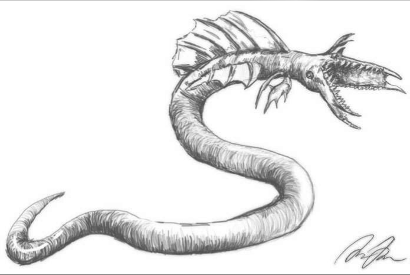

Stargate SG-1 is a series created July 27, 1997. It was made after the original
Stargate Movie by Roland Emmerich and Dean Devlin, before Brad Wright and Jonathan Glassner
made the SG-1 series following the movie's colossal success.
It is a show about how the military discovered an ancient structure made by an alien race thousands
of years ago. It was built by this race on nearly every planet, and when correctly used could enable
travel to other worlds.
"Stargate SG-1" was created by Brad Wright and Jonathan Glassner,
with Brad Wright serving as executive producer and writer throughout the series.
The original Stargate movie was directed by Roland Emmerich and written by Dean Devlin.
After the events of the original Stargate movie, the government initiates a new project to travel
to other worlds using the gate, and bring back weapons or other technologies to help defend
against the alien threat.
Quite early on, they meet the Goa'uld — symbiotic worm-like beings, leaning much more
toward parasites. They take hosts and control their bodies, kinda like possession but grosser.
They are the main antagonists of the series for a long time.

Teal'c was a host to one of these. But since it was still young and not aggressive yet,
he remained in control and became a valuable member of the team after a turning point
early on in the series.